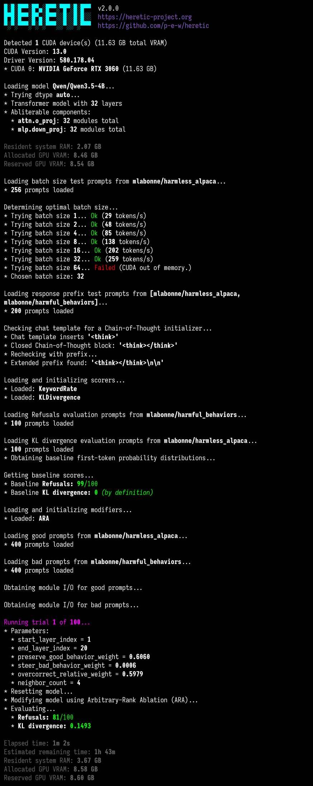
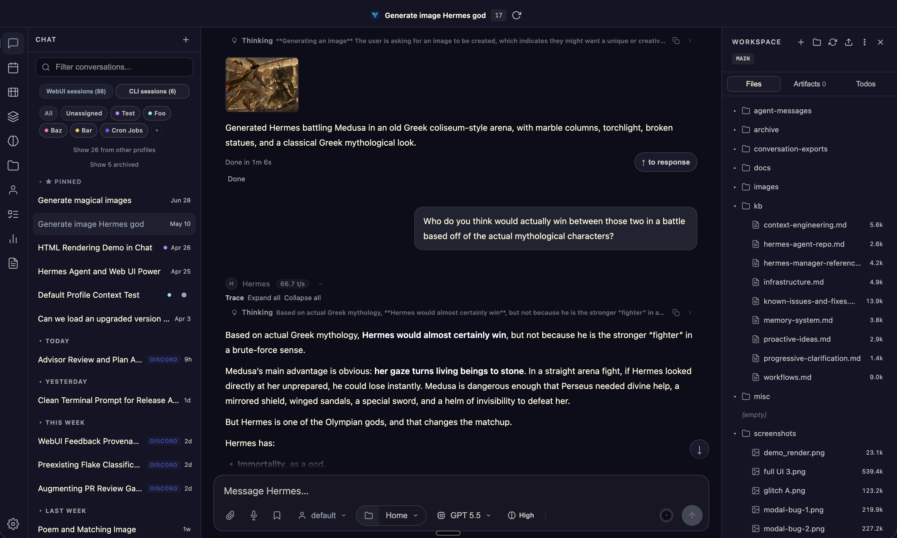
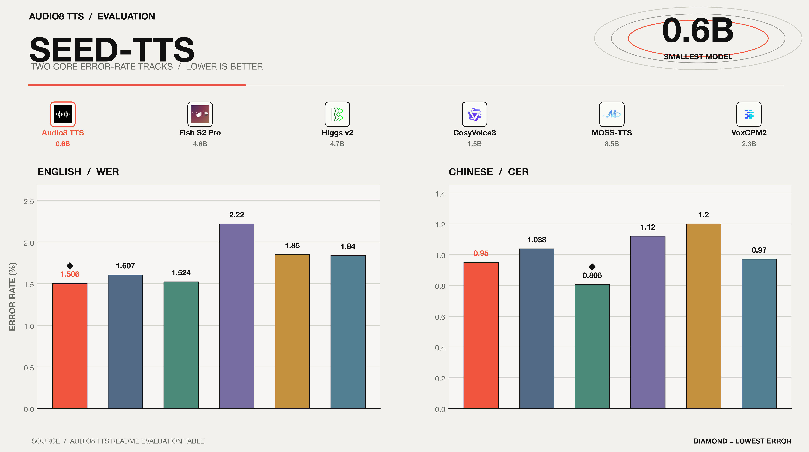

AI Skills
獨立於產品監察名單的 AI 技能優先清單：功能、用法、參考連結，以及每日研究更新。· 最近研究 2026-11-26 07:19 Asia/Hong_Kong
Skills priority list (ordered)
清單可以再加項目。本頁目前只收錄已交嘅十二項。
1. REA — Reverse Engineer Anything
畀 coding agent 檢查程式點樣運作，由應用行為去到原生二進位。
npm rea-agents 6.10.1
MIT
功能
一組 MCP，畀 agent 逆向分析原生執行檔／函式庫、JavaScript 同 Electron 應用、.NET assemblies，以及網站同執行期行為。
分析喺本機執行；回傳結果會帶證據，同埋每項結論的限制。
原生分析可用已安裝的 Hopper、Ghidra、IDA 或 Kuna；安裝過程可在你批准後選裝 Hopper。靜態 JavaScript 分析唔需要原生分析引擎。
同一套工作流程亦可用命令列。官網示範包括由錄製的 web app session 建立 RL 訓練環境。
6.9.0 起，官方 README 亦說明可為 Linux 桌面應用建立環境：agent 以截圖、滑鼠同鍵盤操作；由本機 build computer 安裝應用、寫任務、匯出環境，再喺一部新電腦檢查。建置端需要 Linux（amd64 或 arm64）、Docker，以及指南指定的 agentenv 版本。
離線檢查範圍擴大。官方 6.9.0 說明包括獨立應用套件、嵌入式韌體、NTFS 擷取、API 合約同 V8 code-cache 容器等。分析仍在本機執行，並以保留的 Evidence 為據。
6.10.1 是官方發布到 npm 的第一個 6.10 發行（GitHub 另有 6.10.0 標籤，但 npm 沒有 6.10.0；6.10.1 包含 6.10.0 的變更，另加一項 Kuna 修正）。官方重點包括：三個離線 CLI／MCP 工具可檢查同擷取 UEFI firmware volumes、檔案同 AMI NVRAM；可檢查 Android boot images 同 OTA payloads、NES 2.0 容器，以及 Maven、Gradle、NuGet 套件中繼資料；Evidence revision 2 為檔案、行程、除錯器同瀏覽器觀察加上明確主體識別（遷移細節見發行說明）；已核實的 Ghidra 12.2 通道可開啟已識別的 DOS COM，並支援更多 RISC-V、MIPS32 同 PowerPC64 ELF 目標。完整清單以 GitHub 發行說明 為準。
需要 Node.js 22.x（≥22.23.4）、24.x（≥24.22.1）或 26.12.1+，以及 npm。
用法
已有 Node.js 同 npm 時，喺終端機執行（或將以下指示交俾你嘅 coding agent）：
npx rea-agents@latest setup
選擇 client（官方列出包括 Claude Code、Codex、Cursor、Gemini CLI、Grok Build 及其他）、預覽計劃、批准後重啟 agent。Setup 會登記 REA 的 MCP server 同對應工作流程，並備份現有設定。
之後可以直接問 agent，例如檢查某個 app 的一項功能、出示證據，再喺你自己的專案實作類似能力。
命令列示例（分析已解出的 JavaScript／Electron 目錄或 ASAR）：npx -y rea-agents@latest analyze-javascript-application /absolute/path/to/app --json
長期使用可 npm install --global rea-agents，之後用 rea update 更新。
只應由官方來源取得：morluto/rea 、rea.tools 、或 npm 套件 rea-agents。分析第三方軟體時仍須遵守授權同適用法律。
參考
最新研究（2026-11-25 10:30）
今日再次從 npm registry 同 GitHub /releases/latest 核實，rea-agents 最新穩定版仍為 6.10.1 。GitHub 發布 2026-11-20T05:30:51Z＝2026-11-20 13:30:51 Asia/Hong_Kong；npm latest 發布 2026-11-20T06:52:59Z＝2026-11-20 14:52:59 Asia/Hong_Kong。GitHub 另有 rea-agents-6.10.0 標籤，但 npm 沒有 6.10.0；官方說明 6.10.1 才是第一個發布到 npm 的 6.10。官網安裝指令仍為 npx rea-agents@latest setup。官網 rea.tools 今日回傳 HTTP 200。
6.10 官方重點見上文功能節。完整清單與 Evidence revision 2 的遷移說明以 GitHub 發行說明 為準。
main 分支在 6.10.1 之後仍有未發布提交（今日所見最近一次提交 2026-11-25T02:22:25Z＝2026-11-25 10:22:25 Asia/Hong_Kong；倉庫 pushed_at 2026-11-25T02:22:03Z＝2026-11-25 10:22:03 Asia/Hong_Kong）。這些改動尚未進入發行版，本頁仍以 6.10.1 為準，不把未發布的 main 當成現行版本。
↑ 回到頂部
2. HeyGen HyperFrames
用 HTML 寫影片，再渲染成 MP4。為 AI agent 而設。
v0.9.92
Apache-2.0
官方 Open Graph 圖像（hyperframes.heygen.com）：產品定位同 Studio 工作場景。
官方功能示例：BlockFrame 設計模板。來源：static.heygen.ai/hyperframes-oss/docs/images/design-templates/
功能
開源框架：用 HTML／程式碼同 AI agent 製作影片，再渲染為 MP4（亦可在 Studio 入面預覽同剪輯）。
提供 CLI、Studio（桌面／瀏覽器編輯器，見 hyperframes.studio ）、以及畀 agent 用的 skills，例如媒體生成／處理（/media-use）、把現成影片重建成可編輯專案（/reverse-any-video，Pro）、同風格模板（/style-sampling，Pro）。
典型產出包括產品發布片、程式 diff 講解、數據動畫、字幕社交短片，以及文件／網頁解說片。
需要 Node.js 22+ 同 FFmpeg。雲端渲染同部分 skills 視乎 HyperFrames 計劃。
這是 HeyGen 的 HyperFrames（heygen-com/hyperframes），不是 hyperframe.ai。
用法
npx hyperframes init my-video
cd my-video
npx hyperframes preview # 瀏覽器即時預覽
npx hyperframes render # 渲染成 MP4
Agent 亦可按官方 docs 安裝對應 skills，用自然語言開專案、取素材、對片同出片。
發行說明同每週摘要見官方 changelog；升級時以該頁同 GitHub Releases 為準。
參考
最新研究（2026-11-25 10:30）
今日從 GitHub /releases/latest、官方 changelog 同 npm 核實，GitHub 最新穩定版已更新為 v0.9.92 （發布 2026-11-25T00:33:08Z＝2026-11-25 08:33:08 Asia/Hong_Kong；發行說明寫 Released on 2026-11-24）。相對本頁上一次記錄的 v0.9.87，中間還有 0.9.88、0.9.89、0.9.90 與 0.9.91。npm latest 今日已同步為 0.9.92 （發布 2026-11-25T00:47:07Z＝2026-11-25 08:47:07 Asia/Hong_Kong）；先前未上架的 0.9.87，以及其後的 0.9.88–0.9.91，今日均可在 registry 查到。官方文件與 Studio 今日均回傳 HTTP 200。官方 changelog 今日亦回傳 HTTP 200，並已列出一則標為 Released - 2026-11-25 的 HyperFrames v0.9.93 條目，但 GitHub 尚未有 v0.9.93 標籤或發行，npm 查詢 hyperframes@0.9.93 回傳 HTTP 404。本頁以已核實的 GitHub／npm 穩定版 v0.9.92 為準，不把尚未出包的 changelog 條目當成現行版本。
0.9.92 重點：Studio 重新命名時會指出舊路徑上留下的檔案；密封預覽的移動與縮放會像未密封一樣保存；無法被 Node 解析的 URL 不再中斷渲染；密封預覽可回應文字工具列已寫入的樣式與字型；長音訊可從伺服器讀取 fx 與節拍，而不讓頁面耗盡記憶體；Media Use 再次接受 CAF、W64、WavPack、AU 與 AC3 音訊。
其間較值得注意的能力（據官方發行說明）：0.9.91 讓本機 voice／tts 按原文朗讀旁白，並以輸出檔名把連結換成音訊檔；0.9.90 讓從連結直接開啟的專案頁獨立於 Studio 運行，密封預覽顯示畫布外指標並把運動路徑留在所屬圖層；0.9.89 的 Studio 擷取以伺服器畫面顯示 4K 片段，刪除片段不再重繪每個播放器，檔案／媒體／備份讀取只觸及指定路徑；0.9.88 不再把仍在擷取影片影格的雲端區塊當作停滯而中止，4K 片段在製作較輕預覽期間會播放原檔，CLI 亦宣布新專案將停用 publish。完整逐版說明以官方 changelog 同 GitHub Releases 為準。
↑ 回到頂部
3. Agent2API
本機 AI 路由閘道，接管 Agent 客戶端連線：復用已登入嘅客戶端，以一個 base URL 統一 OpenAI／Anthropic／生圖介面。
v3.5.1
AGPL-3.0
功能
本機 AI 路由閘道，並可接管本機 Agent 客戶端嘅連線設定：匯入既有設定、預覽寫入，再切換到閘道或自訂服務。
對外提供統一模型介面：OpenAI Chat／Responses／Images 同 Anthropic Messages，以及統一模型清單。官方 README 列出小浣熊（Raccoon）、Loomy、Antigravity、ModelScope、WorkBuddy、豆包工作 可提供生圖；其中小浣熊、Loomy、Antigravity、ModelScope 與 WorkBuddy 亦支援參考圖編輯。3.5.1 起，Codex 訂閱亦接入 gpt-image-2 圖片生成與參考圖編輯，圖像冷卻與文字對話額度獨立計算。
路由層集中處理模型對應、帳號優先順序、負載平衡、工作階段黏性同失敗切換。
額外供應商實作以獨立插件安裝同更新，唔隨主程式打包；自訂供應商無需插件。3.5.0 起，提供商插件改為獨立 WASM 沙箱架構，按需獨立安裝與更新，唔直接暴露本機檔案、行程同環境變數；支援批量安裝、更新、啟停同卸載。舊原生插件停止支援，但已有帳號與設定會完整保留。另新增 Magpie／OpenCode 社群插件目錄。插件契約同實作喺 ProvidersPlugin/Agent2Providers 。
閘道金鑰可分權；面板登入可開人機驗證。伺服器／Docker 形態未建立金鑰前預設拒絕轉發 /v1/*（fail-closed）。帳號同更新任務可選出口代理。
請求報表包括請求量、成功率、Token 消耗、快取命中率同 365 天熱力圖。背景維護包括模型清單更新、憑證維護，以及按各供應商時窗執行嘅每日簽到（官方例子：Qoder 10:01、ZCode 19:01）同只處理未簽帳號嘅補簽。
三種形態：Windows／macOS／Linux 桌面端、無介面 Windows／Linux 伺服器，以及 Docker（amd64／arm64）。執行時無需 Node。介面支援六種語言。3.5.0 起亦正式發布 Android（.apk）與 iOS（.ipa，未簽名需自行重簽）安裝包，並同步至 GitHub Releases、官網與 CDN。3.5.0 起內建模型計價與費用估算（可切換顯示貨幣、刷新匯率、自訂單價或參考基準價，並按供應商倍率、分時窗口和帳號維度估算）；3.5.1 起國內模型會用人民幣官方基準單價並按當時匯率折算美元成本。官方說明：暫不提供電腦端 Codex 對話與官方終端共享，但保留普通模型對話及其他 Codex 接入能力；舊版獨立移動端目錄、代理訂閱及內置代理核心已下線。
這是 aimod-cc/Agent2API。官方沒有獨立產品站（GitHub 首頁指向本倉）；唔好同 aimod.cc 線上工具站混淆，亦唔好從已失效嘅舊地址 agent2api/agent2api 安裝。
用法
三種形態按環境揀一個；完整安裝、升級、解除安裝同排錯見官方安裝文件。Docker 示例（latest 跟隨最新穩定版）：
docker run -d --name agent2api --restart unless-stopped \
-p 3065:3065 -v ./data:/data \
aimodcc/agent2api:latestLinux 伺服器端（先從 GitHub Releases 下載對應壓縮包）：
tar -xzf agent2api-server-linux-amd64.tar.gz && cd agent2api-server-linux-amd64 && sudo bash install.sh閘道起來後嘅連線性自測：
curl http://127.0.0.1:3065/health
curl http://127.0.0.1:3065/v1/models
裝完後開啟面板 http://127.0.0.1:3065/（伺服器／Docker 請換成主機 IP），註冊管理員，再喺「閘道 Key」頁建立金鑰。客戶端 base_url 設為 http://127.0.0.1:3065/v1，api_key 用呢把金鑰。
桌面端從 Releases 下載 Agent2API_<版本>_x64-setup.exe、_universal.dmg、_amd64.deb 或 _amd64.AppImage。閘道跑喺應用程式行程內（連接埠 3065），關閉視窗預設最小化到系統匣。加帳號後，可喺「Agent」頁套用連線設定，或手動把客戶端指向上述 base_url。
Docker 標籤：latest 跟最新穩定版，beta 跟最新預發布（官方說明：beta 唔會改動 latest）。同一映像亦喺 GitHub Container Registry：ghcr.io/aimod-cc/agent2api，標籤規則相同。
只應由官方來源取得：aimod-cc/Agent2API 、Docker Hub aimodcc/agent2api
參考
最新研究（2026-11-25 10:30）
今日從 GitHub /releases/latest 同 Docker Hub 核實，最新穩定版仍為 v3.5.1 （GitHub 發布 2026-11-23T17:46:07Z＝2026-11-24 01:46:07 Asia/Hong_Kong；非預發布）。其前一個穩定版仍為 v3.5.0 （2026-11-23T10:52:31Z＝2026-11-23 18:52:31 Asia/Hong_Kong）。Docker Hub 的 aimodcc/agent2api:latest 今日仍與 3.5.1 標籤一致（兩個標籤最後更新分別為 2026-11-23T17:20:24Z 與 2026-11-23T17:20:21Z＝2026-11-24 01:20 Asia/Hong_Kong；digest 相同）。本頁仍以穩定版 v3.5.1 為準。
v3.5.0 與 v3.5.1 的官方重點見上次研究紀錄。完整說明以 v3.5.0 及 v3.5.1 發行說明 為準。
Docker beta 標籤今日仍對應最後一個預發布 3.5.0-beta.8.2（映像更新 2026-11-23T07:09:02Z＝2026-11-23 15:09:02 Asia/Hong_Kong），已不是最新穩定路徑。官方說明仍是：beta 唔會改動 latest。
↑ 回到頂部
4. optimizerDuck
免費開源嘅 Windows 最佳化工具，聚焦效能、私隱同簡潔。
v2.29.0
GPL-3.0
功能
喺同一個介面優化 Windows、移除不必要元件、自訂系統設定，同管理常見 Windows 功能，無需直接改登錄檔、群組原則或 PowerShell。
系統最佳化：官方英文 README 今日寫明 42 項調整、分 7 類（效能、私隱、GPU、電源、冗餘軟體與服務、使用體驗、AI），每項有說明同風險評級（Safe／Moderate／Risky）。官方例子包括按記憶體調整 Service Host、停用遙測同廣告 ID、AMD／NVIDIA／Intel GPU 登錄調整、自訂高效能電源計畫、微調 200 多項服務啟動類型，以及喺 Windows 11 停用 Recall 同 Click To Do。
自訂設定：官方英文 README 今日寫明 44 項、分 4 類（桌面、偏好設定、遊戲、系統），以開關、下拉同數字輸入呈現。
內建工具：系統儀表板、啟動管理、排程工作、磁碟清理，以及冗餘軟體卸載（列出可移除嘅 AppX 並附風險標籤）。
安全設計（官方 Safety 一節）：唔會預設套用任何項目；每次變更會寫還原檔到本機（官方路徑 %LocalAppData%\optimizerDuck\Revert\）；可一鍵還原單項或全部；首次最佳化前提議建立 Windows 還原點。
可攜單檔 .exe，無需安裝。支援 Windows 10／11（x64 同 ARM64），需要系統管理員權限。官方技術說明為 WPF + .NET 10。官方 README 語言表目前列出 18 種語言（包括正體中文）。官方私隱政策：核心功能喺本機執行，正常操作唔收集、追蹤或傳送個人資料。
這是 itsfatduck/optimizerDuck （官網 optimizerduck.vercel.app ），不是另一款同樣開源、常被簡稱為 Optimizer 嘅 hellzerg/optimizer ，亦唔係各類商業「PC optimizer」清理軟件。
用法
官方 Quick Start：從 GitHub Releases 下載，直接執行 .exe（無需安裝），揀要套用嘅項目，再按需要重啟。目前最新穩定版 v2.29.0 嘅發行檔名：
optimizerDuck-Windows-x64-2.29.0.exe
optimizerDuck-Windows-arm64-2.29.0.exe
下載頁：https://github.com/itsfatduck/optimizerDuck/releases/latest （今日核實此網址轉到 v2.29.0）。請揀同你電腦架構相符嘅檔案：大多數 PC 用 x64，Snapdragon 等用 ARM64。
官方提醒：進行系統更改前，請先建立 Windows 系統還原點 ，並備份重要資料。套用後部分變更要重啟先完全生效。使用呢類會改系統設定同登錄檔嘅工具時，須自行判斷風險，並遵守適用法律。
官方 FAQ：如要自行由原始碼建置，可 clone 倉庫後執行 dotnet build。發行版由 GitHub Actions 從公開原始碼自動建置；二進位檔未做代碼簽章，Windows SmartScreen 可能對從網路下載嘅未簽章執行檔顯示警告，官方說明呢個係預期行為，並建議不放心可自行編譯或用獨立沙箱核對。
官方使用聲明同免責：專案依「現況」提供、無擔保；作者不對系統不穩定或資料遺失等負責。完整條款見倉庫嘅 TERMS、DISCLAIMER 同 PRIVACY。
參考
最新研究（2026-11-25 10:30）
今日從 GitHub /releases/latest 核實，最新穩定版仍為 v2.29.0 （發布 2026-10-07T14:36:52Z＝2026-10-07 22:36:52 Asia/Hong_Kong）。官方網站 optimizerduck.vercel.app 今日仍回傳 HTTP 402，Vercel 標頭為 x-vercel-error: DEPLOYMENT_DISABLED。官方 master README 今日仍用 Important 提示說明：該網站與文件因觸及 Vercel 免費方案額度而暫停，並建議從 GitHub Releases 下載；同時列出 Ko-fi、Discord 與電郵作贊助／聯絡。GitHub 倉庫與 Releases 今日仍回傳 HTTP 200。
master 今日仍比 v2.29.0 標籤超前 25 個提交（與 2026-11-23、2026-11-24 記錄相同），未見新提交。最晚一個尚未進入發行標籤的提交，仍是 2026-11-21T15:33:31Z＝2026-11-21 23:33:31 Asia/Hong_Kong 把網站暫停與贊助說明寫入各語言 README。本頁仍以 v2.29.0 為準。v2.29.0 重點不變：每個發行同時提供 x64 同原生 ARM64 兩個執行檔；儀表板改讀實際 EditionID；新增波斯語（fa-IR）介面。授權說明不變：LICENSE 本文寫 GNU GPL v3（今日官網因 402 未能再核）。GitHub API 的 license 欄仍為 Other／NOASSERTION，本頁依 LICENSE 本文標記為 GPL-3.0。
↑ 回到頂部
5. GPUwerk
專用 DGX Spark／GPU 租用雲：預付、按分鐘計費，無需銷售電話。
from $0.69/h
prepaid
commercial cloud
功能
GPUwerk（寫成一個詞，官網 gpuwerk.com ）係捷克的專用 NVIDIA DGX Spark／GPU 租用雲：以預付信用額按分鐘出租整部機器，自助登記，無需銷售電話。營運者為 PRINT IT! SE，創辦人 Samuel Seidel。這不是名稱相近的「GPU Work」、GPUWorks 或其他 GPU 市集。
一部 Spark 租用包含整部專用機器、同一時間只服務一名租用者：NVIDIA GB10、ARM64（aarch64）、20 核 Arm CPU、128 GB 統一記憶體。官網首頁今日仍寫 1 PFLOP FP4 AI 運算（sparse），以及 273 GB/s 頻寬。儲存為 1 TB NVMe，與系統及模型快取共用，沒有固定可用容量，亦不做備份。
映像：DGX OS 7 或 Ubuntu 24.04 LTS，兩者都附 CUDA 13.0 toolkit。在 GPUwerk 自有 Spark 上另有模型預設（以 vLLM 或 llama.cpp 提供模型服務，例如 Qwen3 Coder 30B），以及 JupyterLab、VS Code 或 ComfyUI。不能自訂基底映像；可用 apt 或 pip 安裝，在有 Docker 的機器上可跑自己的 arm64 容器。容器內為 root，但不是主機 root。Docker 與 systemd 只在部分機器提供，不能自行揀選，用 docker info 判斷。
不能使用：核心模組、改驅動、privileged mode、TUN 裝置（核心 VPN 或 Tailscale），以及只支援 x86 的映像。
計費：美元、未含適用稅項；按分鐘從預付信用額扣除，時薪即為全部價格，沒有入站或出站流量費。（Spark 的 200 Gb/s ConnectX-7 是節點之間的互連，不是互聯網上行。）今日定價頁與首頁寫明起步／最低儲值為 $5（Start with $5 credit，官網指約六個 Spark 小時）。先前頁面記載的首次儲值付 $20 得 $30，今日已不再出現在首頁或定價頁。條款先前寫明結束帳戶後 12 個月內可申請退還未用預付款；現行退款細則以官方法律頁與控制台為準。
今日核實（定價頁標示 Updated 21 November 2026）：1× DGX Spark 專用機仍為 $0.79／小時，按分鐘計。2× 連線叢集仍為 $1.79／小時：256 GB 是兩部機的合計，不是單一記憶體池；略高於 2×$0.79，因為兩部機以 200 Gb/s ConnectX-7 纜線成對出租，需要支援分散式執行的 runtime。DGX Spark 1×（Partner）機型相同、同樣 $0.79／小時，由已審核的獨立合作夥伴在其場所託管；控制台會顯示國家，以及是否位於 EEA。GPUwerk 以鎖定作業系統遙距操作，並在租用之間抹除資料，但合作夥伴有實體接觸權。沒有 SLA。若租用期間機器被撤回，或離線超過 15 分鐘，計費停止並退還該段租用的全部費用；工作區在可連線時保留 24 小時供你複製資料，其後抹除。信用額用盡後，定價頁寫明工作區最多保留 48 小時，或直至他人租用該機。先前以 $0.79 推算並列在定價頁的全日 $18.96、一週 $132.72、730 小時 $576.70，今日已不再出現在首頁或定價頁。
按月或長期預訂價目今日已不再公布。定價頁寫明較長租期、多部伺服器或更優價格須另行查詢；先前的 /pricing/reserved/ 今日回傳 HTTP 200，但內容只指向按分鐘計費的定價頁，並寫 For a long-term rental or better pricing, write to GPUwerk。官網首頁另公布 Week pass：一部 DGX Spark 七日通行證 €99（未含稅），一次付清，該週無論運行或停止都不再按小時計，每個帳戶一張。
官方地點表日期為 2026-11-21（哪部機空閒會按分鐘改變；控制台 Location 選單為當時清單）。自有機在捷克（EEA）。EEA 合作夥伴 Spark 今日列出捷克、德國、斯洛伐克、瑞典。EEA 以外合作夥伴 Spark 列出英國、美國、香港。先前清單中的荷蘭與羅馬尼亞，以及自有機所在城市 Hradec Králové，今日首頁與定價頁均未再寫出。預設部署留在 EEA，除非你另選地點。
亦按先到先得出租 x86 GPU 層級，以及 8 卡伺服器（費率為單卡的 8 倍，同樣按分鐘計）。官方定價頁今日費率如下；容量與輪候見 status.gpuwerk.com （今日該頁可開啟）。輪候免費、先到先得。
x86／8 卡官方時薪（來源：gpuwerk.com/pricing/ ，Updated 21 November 2026；美元、未含適用稅項。現行數字以該頁與控制台為準。）
層級 記憶體 時薪
RTX 5090 32 GB GDDR7 $0.69／小時 L4 24 GB GDDR6 $0.49／小時 RTX 6000 Ada 48 GB GDDR6 ECC $0.75／小時 L40S 48 GB GDDR6 $0.99／小時 RTX PRO 6000 Blackwell 96 GB GDDR7 ECC $1.89／小時 H100 SXM 80 GB HBM3 $2.69／小時 H200 141 GB HBM3e $3.49／小時 B200 180 GB HBM3e $5.49／小時 B300 288 GB HBM3e $6.49／小時 8× H100 伺服器 8 × 80 GB HBM3 $21.52／小時 8× H200 伺服器 8 × 141 GB HBM3e $27.92／小時 8× B200 伺服器 8 × 180 GB HBM3e $43.92／小時 8× B300 伺服器 8 × 288 GB HBM3e $51.92／小時
官方另有 GB10 商店 、購入後由 GPUwerk 託管（服務頁 今日寫每月 €29，未含 VAT）、現場報價，以及 出租自有 Spark ／顧問服務。本卡聚焦租用雲與定價。
用法
官方流程在控制台完成，不是命令列部署。文件入口見 docs ；新手可由 首次評估 或 如何按分鐘租用 開始。控制台亦有 setup guide 。
在 console.gpuwerk.com 登入，以信用卡加入預付信用額（今日官網寫起步／最低儲值 $5）。預付款不會預留機器。
選擇硬體與映像，按當時容量部署。無需 SSH 金鑰即可使用控制台的瀏覽器終端機；若要用 SSH，自行加入金鑰，詳見 SSH keys 與 瀏覽器終端機 。
在控制台按 Stop：Spark 繼續為你保留，按運行費率的 75% 計費（相對 $0.79 即 $0.59／小時），工作區不刪除。從系統內部關機（官方例子：poweroff、shutdown）會停止實例且其後不再收費；約 30 分鐘未再啟動，機器會被釋放。Terminate 立即結束計費並刪除工作區（控制台會要求輸入實例名稱確認）。
信用額或每月預算用盡：實例會被停止、機器釋放；工作區最多保留 48 小時，除非有人先租走該機。沒有備份：GPUwerk 不保留 /workspace 的副本，硬碟故障即會遺失，須自行備份。匯出方法見 Get your files out 。
機器是 ARM64，x86 專用映像不能運行。不能自訂基底映像，亦不能改驅動或載入核心模組。環境細節見 tenant environment （該頁更新於 2026-11-12）。
參考
最新研究（2026-11-25 10:30）
今日重新抓取官方首頁與定價頁。定價頁印記仍為 Updated 21 November 2026；地點表日期仍為 2026-11-21。金額為美元、未含適用稅項。1× DGX Spark（自有或 Partner）仍為 $0.79／小時，按分鐘計；2× 連線叢集仍為 $1.79／小時。控制台停止後保留機器仍按 75% 計（Spark 為 $0.59／小時）。定價頁標題仍為 from $0.69/hour，對應 RTX 5090 的 $0.69／小時。L4 仍列 $0.49／小時。最低儲值仍為 $5。
官方首頁與定價頁今日均回傳 HTTP 200。官方圖像無較新替代，維持原圖。
↑ 回到頂部
6. Microsoft PowerPoint 互動式投影片
PowerPoint 內建的 Copilot 技能「建立互動式投影片」（Create interactive slide）：以提示建立可供講者與觀眾一同探索的視覺互動投影片。
Create interactive slide
Microsoft 365 Copilot
PowerPoint
4all.dev 電子書官方封面／Open Graph 圖像（來源 ）：AI4All 教學筆記《Copilot X Claude · 挑戰 24 種互動 PPTX 效果》，不是 Microsoft 官方截圖，亦不是此技能的產品廠商畫面。
功能
這是 Microsoft 365 版 PowerPoint 內建的官方 Copilot 技能「建立互動式投影片」（英文產品用語 Interactive slides；技能名稱 Create interactive slide），不是 Gamma、Beautiful.ai、Plus AI、一般 VBA／HTML 增益集，也不是 html-ppt 或 HTML Deck 一類工具，更不是已列第 2 項的 HeyGen HyperFrames。教學網站 4all.dev 與下方影片是 AI4All 的操作筆記與示範，不是此功能的產品供應商。
官方定義：互動式投影片由 Copilot 建立，具有視覺互動性，講者與觀眾可以一起探索。描述想講述的故事後，Copilot 會做出可點擊瀏覽的投影片，在互動時顯示脈絡、步驟或資料點。
可從 PowerPoint 首頁或插入功能區選取 Interactive Slide（互動式投影片），在 Copilot 聊天窗格開始；亦可從 Copilot 技能選擇器找到「建立互動式投影片」。可從建議類別著手（官方說明圖顯示 Summary、Timeline、Dashboard、Comparison），或建立自訂（Custom）互動式投影片。
可用 Work IQ 以既有工作內容為依據，例如根據 Excel 活頁簿的資料快照建立儀表板，或根據專案文件中的時間表建立時間軸，由 Copilot 填入數字與日期。
精煉方式是繼續在 Copilot 窗格用提示更新，官方例子包括「將此改為橫條圖」「依地區新增篩選」「將色彩與我的主題相匹配」。重要： 互動式投影片須透過 Copilot 建立與更新，不支援直接在畫布上編輯；應把變更作為提示送出，而不是改投影片物件。
針對整張投影片體驗優化。在 Mac 與 iPad 上，投影片上的其他內容會顯示在互動式內容後面。
授權：提供給已可在 PowerPoint 使用 Copilot 的合格消費者與商業使用者，包括 Microsoft 365 Copilot 基本版與進階版。互動式投影片沒有單獨授權。沒有系統管理員控制項：所有持有適當 Copilot 授權的使用者都可以用此技能建立或更新；分享簡報後，對方即使沒有 Copilot 授權也可以探索互動。
建立或更新：Copilot 應用程式，以及 Windows、Mac、網頁版 PowerPoint 中的 Copilot。互動：以上環境，加上 iPad，以及 Microsoft Teams 中的 PowerPoint Live。無互動性：iPhone、Android，以及列印或匯出為 PDF 等其他格式時，該投影片會顯示為非互動影像。
簡報：Windows、Mac、網頁與 iPad 版 PowerPoint 均可在放映時與互動式投影片互動（展開步驟、篩選圖表、沿時間軸移動等，視建立結果而定）。Windows、網頁與 iPad 同時支援簡報者檢視與投影片放映；Mac 可在投影片放映中互動，但不能在簡報者檢視中互動（官方寫明計劃作為未來改進）。
Microsoft Teams 的 PowerPoint Live（以官方 Support 為準）：每位會議出席者可以獨立與投影片互動；互動不會共用，出席者只見到自己的操作，見不到講者或其他人的操作。同步講者互動是計劃中的未來改進。不要把與此矛盾的非官方博客當成事實。
常見問題（官方）：互動式投影片會在投影片上建立沙盒化的 Web 檢視以顯示與提供互動，該檢視不會連線至其他內容或服務。直接在畫布編輯不受支援。重新開啟檔案時，會還原為上次用 Copilot 建立或更新時的起始版面；同一工作階段內的互動可能會保留，直到關閉檔案。此技能使用 Microsoft 365 Copilot 與 Microsoft 365 Copilot 代理程式來建立或更新；與 Purview、敏感度標籤的關係見官方文章（下方參考）。
協助工具（官方）：左右方向鍵一律用來換頁，即使互動式投影片在螢幕上，這些按鍵也不會被互動內容擷取。按 Tab 將焦點移入互動內容，再按 Tab 依序移動，各元素有可見焦點指示。按 Tab 越過最後一個元素，或按 Esc，焦點回到 PowerPoint；再按 Esc 離開投影片放映。焦點本身絕不會自動進入互動內容。進一步的鍵盤優化已列入計劃；在 Mac 與網頁版，將焦點移出或用鍵盤到達互動式工具列的行為可能不同。
官方提醒：Copilot 以 AI 模型產生版面、內容與行為，可能出現非預期或錯誤內容，簡報或分享前應自行檢閱核對。
官方博客（Derek Johnson，標示 2026 年 10 月 19 日；頁面另標 Updated Oct 16, 2026）舉出的用途：以資料快照（含 Work IQ）建立儀表板、互動時間軸與流程、以視覺探索摘要或解釋複雜概念，以及比較產品、情境或策略。
教學示範（AI4All，非 Microsoft 官方分類）
以下內容來自 AI4All（@AI4All-edu ）於 2026-11-13 19:30 Asia/Hong_Kong 發布的教學影片（約 11 分 38 秒；片名《【AI教學應用】Copilot X Claude | Agent 互動 PPT | 挑戰 24 種 效果》，影片 ID ZR2Bt9d-5tI），以及同系列電子書《Copilot X Claude · 挑戰 24 種互動 PPTX 效果》（4all.dev，系列「AI教學應用」，2 頁 PDF，發布 2026.11.12，作者 Dr. A）。這是教學示範，不是 Microsoft 官方文件或官方效果分類。
影片作者說明：在 Microsoft 365 進階版（Premium）免費試用帳號中，PowerPoint 的 Copilot 可選用 Claude Opus 5.5；他們以一頁指令加上事先準備的考評局（HKEAA）公開資料，分五批讓 Copilot 做出 28 頁 PPTX，挑戰 24 種互動效果。示範 PPTX 與指令透過上述電子書提供。模型選擇以作者 2026 年 11 月試用帳號所見為準，可能變更，不以本頁當作官方模型清單。
影片聲稱的 24 種效果（五組，屬 AI4All 的示範集合，不是 Microsoft 官方分類）：
開場主視覺：封面、章節分頁、拉鏈、粒子、目錄
數據與統計：重點數字、儀表板、圖表變身、分佈比較、競賽圖表、泡泡圖、漏斗圖、滾動圖
結構與故事：分頁切換、時間軸、逐步展開、便當格、方塊圖
比較與媒體：圖像對比、開關比較、試場圖
觀眾參與：即場問答、幸運輪盤、倒數
方案與價格：影片提到 Microsoft 365 進階版（Premium）月費 HK$158，並有一個月免費試用（未取消會自動續訂）。今日核實香港官方比較所有 Microsoft 365 產品 頁，Microsoft 365 進階版標示為 HK$158.00／月 ，另有 HK$1,580.00／年 ；該頁亦有「免費試用 Microsoft 365 進階版 1 個月」連結（try-premium ）。自動續訂與試用是否須綁定信用卡，以官方結帳條款為準；影片作者亦聲明試用須信用卡、無贊助，且價格／功能／模型選擇以 2026 年 11 月 Microsoft 香港官方網站及其試用帳號為準、可能變更。此技能本身沒有單獨授權費用，見上方官方授權說明。
影片亦談及 Skills 與圖像生成（作者提到 GPT-Image-2.5、Anthropic theme-factory、4all.dev 品牌範本）。本頁不轉載其指令。影片結尾的模型測驗、社群連結或打賞不屬於本技能說明。作者另稱部分沒有 Copilot 的 PowerPoint 版本在他們自己的測試中仍可互動，並註明 Microsoft 對此沒有官方說明——本頁不把它當成官方支援範圍。
用法
以下步驟以官方 Microsoft Support 為準。建立與更新都在 Copilot 中完成。
在已具 PowerPoint Copilot 的環境，打開 Windows、Mac 或網頁版 PowerPoint（或 Copilot 應用程式）。若功能區尚未出現此按鈕，官方建議更新至最新的 Current Channel 或 Monthly Enterprise Channel（Windows／Mac）、最新 App Store 的 iPad 應用，以及用於 PowerPoint Live 的最新正式版 Microsoft Teams。官方 Support 寫明：Windows／Mac 與網頁版的技能與功能區按鈕於 2026 年 10 月中旬開始在 Current Channel 與 Monthly Enterprise Channel 推出，預計 10 月底完成；具 Frontier、Microsoft 365 測試人員 Beta 通道或 Current Channel（Preview）權限的使用者當時即可使用（網頁版同樣窗口，Frontier 可用）。本頁以今日仍刊出的官方說明為準，不另行宣稱全線是否已完成推出。
在首頁或插入功能區選取 Interactive Slide（互動式投影片），於 Copilot 聊天窗格說明要做的投影片；或在 Copilot 技能選擇器選取「建立互動式投影片」。可從建議類別開始，或選擇自訂。說明愈具體，愈能對應敘事。
若要以既有工作檔為依據，透過 Work IQ 參考 Excel 快照或專案文件中的時間表等內容。
若不滿意，保持 Copilot 窗格開啟並以提示要求修改（例如改圖表類型、加篩選、配合主題）。不要直接在畫布上改互動內容。
簡報時：Windows、網頁、iPad 可在簡報者檢視與投影片放映中互動；Mac 目前只在投影片放映中互動。在 Teams 的 PowerPoint Live，出席者各自獨立互動，互不可見，亦不會同步講者操作。分享出去的檔案，對方無需 Copilot 授權即可探索互動。
注意：iPhone、Android、列印與匯出 PDF 等格式只會看到靜態影像。開啟檔案會回到上次 Copilot 建立或更新的起始版面。簡報前請檢閱 AI 產生的內容。
使用 AI4All 筆記：到 4all.dev 電子書頁 （另有 英文 與簡體 頁）。香港及部分地區需免費 Google 登入才能下載 PDF 與示範 PPTX。本頁不轉載筆記中的完整指令或檔案內容，請到原站下載。
參考
最新研究（2026-11-25 10:30）
今日再次核實官方 Microsoft Support（zh-HK 與 en-US）以及教學引用 4all.dev ebook，上述連結均回傳 HTTP 200。兩份 Support 頁的 ms.date 仍為 2026-10-13。未見更新的官方技能說明或平台限制改動。
這仍是 Microsoft 365 訂閱內的官方 Copilot「建立互動式投影片／Create interactive slide」功能，不是開源專案。本頁不把它與 Gamma、Beautiful.ai、Plus AI、html-ppt／HTML Deck，或清單第 2 項 HeyGen HyperFrames 混淆。
↑ 回到頂部
7. Graphify
用 /graphify 把專案（程式、文件、PDF、圖像、影片）建成可查詢的知識圖譜，用圖譜查詢代替逐檔搜尋。
graphifyy 0.9.119
Apache-2.0
功能
這是 Graphify Labs 的開源引擎與可選託管產品 Graphify（官網 graphify.com ；www.graphify.com 今日重定向到規範網址 https://graphify.com/）。官方原始碼在 Graphify-Labs/graphify ，預設分支為 v8 （不是 main）。官方 v8 README 的 YC S26 徽章，以及 Y Combinator 公司頁（batch S26／Summer 2026）均確認 Graphify Labs 為 YC S26 公司。這不是其他同名「Graphify」產品；官方 skill.md 寫明不要連結 graphify.net。
在 AI coding assistant 輸入 /graphify，即可把專案（程式、文件、PDF、圖像、影片）建成可查詢的知識圖譜，之後查圖譜，而不必逐檔搜尋。
程式碼以 tree-sitter AST 在本機解析：結果具確定性、不經 LLM，亦不會把程式碼送出本機。文件、PDF、圖像與影片則使用助手本身的模型，或已設定的 API 金鑰，做語意處理。
現行 v8 README 說明：每條邊會標為 EXTRACTED（來源中明示）或 INFERRED（由 Graphify 解析得出）。官方網站 FAQ（今日核實）對「Does it use embeddings at all?」的原文是：可以在節點上把 embeddings 存成一項訊號，但檢索是圖譜遍歷，而不是相似度搜尋；結果以相連、可解釋的路徑返回，而不是一組外觀相近的片段排名。
官方 README 寫明典型產出是 graphify-out/ 內三個檔：graph.html（瀏覽器互動圖）、GRAPH_REPORT.md（重點與建議問題）、以及 graph.json（完整圖譜，可稍後再查而無需重讀檔案）。官方匯出文件今日仍列出 wiki、Obsidian（含 graph.canvas）、GraphML、SVG、Neo4j／FalkorDB 等匯出，以及本機 MCP 伺服器、graphify watch 與 graphify hook install（提交、切換分支、合併、pull、rebase 後在背景重建程式圖譜）。詳見下方參考，此處不轉錄整份 README。
開源引擎與 Cloud 要分開看。開源引擎以 Apache 2.0 授權，在你的機器上執行，無需 Graphify 帳號。Graphify Cloud（app.graphify.com ）是可選的託管產品：官方說明為常駐託管圖譜、PR 審查、形式驗證與連接器。官方網站寫 Free plan、無需信用卡；官方定價文件今日寫明 Free 計劃最多 3 個已索引倉庫，同樣無需信用卡。託管 MCP 為 https://api.graphify.com/mcp （Streamable HTTP、OAuth、無需 API 金鑰），與本機開源引擎（graphify-mcp，stdio 或本機 HTTP）不是同一條路徑。
現行專案授權為 Apache-2.0 （v8 的 LICENSE、GitHub license 欄、pyproject license = "Apache-2.0"，以及官網的 open core／Apache 2.0 說明一致）。NOTICE 寫「Copyright 2026 Safi Shamsi and the Graphify contributors」，並說明已改以 Apache 2.0 授權；先前以 MIT 貢獻的部分仍可依 LICENSE-MIT 取得。現行授權不要標成 MIT。
助手與語法數量：官方頁今日沒有單一數字。官網 FAQ 寫「17, including Claude Code, Cursor, Copilot, Codex, Gemini CLI and Aider」；v8 README 寫 Claude Code、Cursor、Codex、Gemini CLI、GitHub Copilot，「and 20+ more」；官網軟體中繼資料亦寫 20+ AI coding assistants。語法方面：官網 on-device 文案寫 33 tree-sitter grammars；v8 README 與官網軟體中繼資料寫約 40 種語言；官方 skill.md 寫開源 CLI 支援 40 種語言，託管產品列出 63 grammars。本頁不自行合併成一個數字。
用法
官方 0.9.119（及自 0.9.113 起）發行說明與 PyPI 套件 graphifyy：需要 Python 3.11.5+，以及 uv（或 pipx）。此下限由 0.9.113 起由 3.11 提高至 3.11.5（官方說明把 soupsieve 釘選為 4.1.1，以清除經 beautifulsoup4 出現在可選 svg／all／pdf extras 的 advisories）。PyPI requires_python 為 >=3.11.5,<3.15。官方寫明：Python 3.11.0–3.11.4 的安裝會停留在 0.9.112；Python 3.10 的安裝會停留在 0.9.110（最後一個相容 3.10 的發行）。官方建議安裝：
uv tool install graphifyy
graphify install之後在助手裡輸入：
/graphify .
官方亦列出 pipx install graphifyy。另有 pip install graphifyy（官方註明可能要設定 PATH）。不要用 pip install graphify 作為官方安裝途徑。現行 v8 README 的官方套件說明：PyPI 套件名是 graphifyy（兩個 y），其他 PyPI 上的 graphify* 套件並非官方；命令列與技能指令仍是 graphify。
官方 Quickstart：不加旗標的 graphify install 針對 Claude Code，會把技能寫到 ~/.claude/skills/graphify/SKILL.md，並登記到 ~/.claude/CLAUDE.md。其他助手用 graphify install --platform …（官方例子：graphify install --platform codex）。v8 README 的平台表另有部分專用命令，例如 graphify cursor install、graphify vscode install；完整名單以該表與安裝文件 為準。要以專案目錄而非使用者設定安裝時，加 --project。0.9.112 起，graphify claude install 會寫入專案或上層既有的 CLAUDE.md／.claude/CLAUDE.md；若沒有，才寫入既有的 AGENTS.md／.claude/AGENTS.md；再沒有才新建 CLAUDE.md。官方說明是：只要存在 CLAUDE.md，Claude Code 就不會讀 AGENTS.md，先前在 AGENTS.md 旁邊新建 CLAUDE.md 會令該 AGENTS.md 被隱藏。解除安裝亦對稱。同發行亦規定：graphify install 若遇到無法解析的既有 Kilo 設定，會拒絕覆寫以免丟失用戶設定。
建圖之後可用 /graphify query "…"、/graphify path "A" "B"、/graphify explain "…" 查圖譜；終端機亦可用 graphify query／path／explain 直接讀 graph.json。0.9.110 起另有 graphify section "<heading>" 命令與 MCP 工具 get_section：可把 Markdown 標題讀成該節完整本文（讀取時由來源檔得出，圖譜與快取不變）；專案以外的路徑會被拒絕。只想為程式建圖、略過需模型的文件／媒體時，官方文件寫 graphify extract . --code-only。
只應由官方來源取得：Graphify-Labs/graphify （以 v8 分支與 GitHub Releases 為準）、graphify.com 、docs.graphify.com ，以及 PyPI 套件 graphifyy。不要引用已過時的 main 分支 README（今日仍提到 safishamsi/graphify 與較舊的安裝步驟）。safishamsi/graphify 今日會轉到 Graphify-Labs/graphify。
參考
最新研究（2026-11-25 10:30）
今日從 GitHub /releases/latest 同 PyPI 套件 graphifyy 核實，最新穩定版已更新為 0.9.119 （GitHub 發布 2026-11-24T15:23:07Z＝2026-11-24 23:23:07 Asia/Hong_Kong；PyPI 上傳 2026-11-24T15:23:46Z＝2026-11-24 23:23:46 Asia/Hong_Kong）。上一穩定版是 0.9.118；GitHub 與 PyPI 仍無 0.9.116 或 0.9.117。倉庫預設分支仍為 v8。官方網站 graphify.com 與 docs.graphify.com 今日均回傳 HTTP 200。PyPI requires_python 仍為 >=3.11.5,<3.15。
0.9.119 是對 0.9.118 一個核心安裝迴歸的修正，另有十份社群 pull request 涵蓋解析、抽取、匯出與效能。Python、Go 與 COBOL 的變更會改變節點／邊輸出，因此 AST 快取 schema 由 53 升至 55 ；升級後第一次建立會重新抽取這三種語言，其餘修正無需重建。最重要的迴歸是：0.9.118 在 graphify/serve.py 頂部匯入了只屬於 [mcp] extra 的 anyio，令未安裝該 extra 的核心安裝在執行 query、path、explain、affected、benchmark 時出現 ModuleNotFoundError；0.9.119 把該匯入移回 MCP 伺服器路徑。其他修正包括：Python lambda／函式參數遮蔽不再誤綁到模組層定義；Go 區域變數遮蔽套件名稱時改解析為區域接收者；COBOL GO TO 會發出 calls 邊；wiki 交叉參照改以節點 ID 連結。完整清單以 GitHub 發行說明 為準。
↑ 回到頂部
8. T3 Code
開源的 coding agent 控制平面：在本機運行你已登入的 agent，用同一個介面在桌面、網頁同手機審批同繼續工作。
v0.1.11
MIT
功能
這是 T3 Tools Inc. 的開源應用 T3 Code （官網 t3.codes ；網頁應用 app.t3.codes ；原始碼 pingdotgg/t3code ）。官方 README 標語同官網標題均為 “The open-source control plane for coding agents.” 授權為 MIT （LICENSE 寫 “Copyright (c) 2026 T3 Tools Inc.”；GitHub license 欄亦為 MIT）。
這是控制平面應用本身，不是 Theo 的獨立 skills 倉 t3dotgg/tstack （該倉是另一套可在 Claude Code／Codex 使用的 agent skills；其 README 提到在有 T3 Code 時可使用其功能，但仍是獨立專案，本頁不把 tstack 的 skill 清單當成 T3 Code 的功能），亦不是 Next.js 起步專案 T3 Stack／create-t3-app。官方 npm 套件名是 t3，不要下載名稱相近但無關的套件。
T3 Code 在你的機器上運行 coding agents，並提供同一個介面。可在書桌開始一個對話串，再到手機批准下一個步驟。
官方 README 列出可配合 Claude Code、Codex、Cursor、OpenCode、Grok Build、Antigravity、Kiro、Pi、Muse Code、fx，以及任何 ACP agent。官網較短的名單為 Claude Code、Codex、Antigravity、OpenCode、Cursor 同 Grok。本頁不自行合併成一個數字；完整名單以 README 同文件為準。
官方 README 的 “Your subscriptions”：T3 Code 不轉售 token，而是驅動你已經登入的 agent。需要先安裝並登入至少一個 agent，官方例子包括執行 claude auth login 或 codex login。官方 FAQ 寫明沒有付費使用 T3 Code 本身的途徑；你仍向自己的 agent 供應商付費。本頁不另外杜撰 T3 Code 的收費方案。
提供桌面、網頁同手機（iOS 與 Android）客戶端：一個 server，每個客戶端顯示同一批對話串。
遙距連接可經本機網絡、Tailscale，或 T3 Connect，詳見官方 remote-access 文件。
內建 Git：每個對話串可用獨立 worktree；可檢視 diff，然後 commit、push 並開 pull request。
用法
以下安裝與啟動指令均出自官方 README／install.md ，不要改用非官方鏡像。
桌面應用可到 t3.codes/download 下載 macOS、Windows 或 Linux 版本，亦可用官方列出的套件管理器：
brew install --cask t3-code
winget install T3Tools.T3Code
scoop install extras/t3code
yay -S t3code-bin
nix profile add github:NixOS/nixpkgs/nixos-unstable#t3codeDebian／Ubuntu 則從 GitHub Releases 安裝官方 .deb。命令列安裝會裝上 t3 指令；執行 t3 會啟動 server 並開啟網頁應用：
curl -fsSL https://t3.codes/install.sh | shWindows PowerShell：
irm https://t3.codes/install.ps1 | iex只想試一次、不安裝時，官方指令為 npx t3@latest（會使用穩定版 latest）。
手機請由 App Store 或 Google Play 安裝，再按 remote-access 文件連回你的電腦。
裝好 T3 Code 之後，仍須有一個已安裝並已登入的 agent。各供應商步驟見官方 install.md 的 Providers 一節。
官方 install.md 亦說明 nightly 安裝（例如設定 T3CODE_CHANNEL=nightly，Arch 另有 yay -S t3code-nightly-bin），以及 AppImage、WSL、NixOS 等。nightly／preview 不是本頁所記的現行穩定版；現行穩定版以 GitHub /releases/latest 同 npm t3 的 latest 為準，今日均為 v0.1.11 ／0.1.10 。
參考
最新研究（2026-11-25 10:30）
今日從 GitHub /releases/latest 同 npm 套件 t3 的 latest dist-tag 核實，現行穩定版仍為 v0.1.11 ／0.1.11（GitHub 發布 2026-11-20T07:38:08Z＝2026-11-20 15:38:08 Asia/Hong_Kong；npm latest 發布 2026-11-20T07:39:50Z＝2026-11-20 15:39:50 Asia/Hong_Kong）。這仍是正式的非預發布發行。官網與下載頁今日回傳 HTTP 200。試用指令仍為 npx t3@latest（現在會取得 0.1.11）。
v0.1.11 官方重點不變，見上次研究紀錄。完整清單以 GitHub 發行說明 為準。
同一 npm 套件今日的預發布 dist-tag：preview 仍為 0.1.10-preview.20261112.4593；nightly 已更新至 0.1.12-nightly.20261124.5209（npm 發布 2026-11-24T20:56:52Z＝2026-11-25 04:56:52 Asia/Hong_Kong）。這些仍不是用來取代 GitHub /releases/latest 與 npm latest 的途徑。授權仍為 MIT（T3 Tools Inc.）。這不是 t3dotgg/tstack，亦不是 T3 Stack／create-t3-app。官方 npm 套件仍是 t3。
↑ 回到頂部
9. Heretic
免訓練的語言模型行為修改工具：以對比示例提示與評分器外掛引導模型行為，預設為抑制拒絕／移除審查。
v2.1.0
AGPL-3.0-or-later

官方命令列操作畫面（README 標為 “Heretic screenshot”）。來源：p-e-w/heretic README 所嵌的 GitHub user-attachments 圖像 a030f595-67ef-49a6-9d9a-779fdf752b58 。圖中橫額顯示先前穩定版 v2.0.0，不是本頁所記的現行穩定版 v2.1.0。
功能
這是 Philipp Emanuel Weidmann（GitHub 使用者 p-e-w ）開發的開源工具 Heretic 。官網為 heretic-project.org ，原始碼在 p-e-w/heretic ，預設分支為 master 。亦有官方 Codeberg 鏡像 codeberg.org/p-e-w/heretic ，以及 Hugging Face 組織 huggingface.co/heretic-org 。官方 PyPI 摘要為 “Training-free language model modification”。這不是其他同名「Heretic」產品或遊戲；規範網站是 heretic-project.org。
官方 README 說明：Heretic 讓你修改 語言模型，而不只是執行它們。它不做昂貴的訓練，而是用一套數學技術，根據對比示例提示與對應的 scorer 外掛來引導行為。
視設定而定，官方列出可以：抑制拒絕／移除審查（這是預設動作 ）；減少 slop（config.noslop.tomlconfig.nohumor.tomlconfig.nosyco.tomlconfig.emotions.tomlconfig.terse.tomlconfig.classifier.tomlconfig.piqa.toml
行為由一個或多個 scorer 外掛的分數優化。預設為拒絕率（KeywordRate）與 KL divergence（KLDivergence）。可同時使用多個 scorer，亦可載入自己的外掛，不必改套件原始碼。預設 modifier 是專為 Heretic 開發的 Arbitrary-Rank Ablation（ARA）；亦附有經典的 directional ablation／「abliteration」。Heretic 2.x 預設使用 ARA，不是 abliteration。
官方 README 稱支援大多數 dense 模型，包括不少多模態模型、數種 MoE 架構，以及許多現代 hybrid 模型；並寫明使用時不必理解語言模型的內部運作。社群已用 Heretic 建立並發布數以千計的模型（官方指向 Hugging Face 的 heretic 標籤）。README 亦引用第三方比較，稱在部分公開評測中相對其他 abliteration 工具表現良好；那些比較不是本頁自行重跑的基準。
處理完成後，可選擇把模型存到本機資料夾、上傳到 Hugging Face、以對話測試效果，或跑標準基準測試，亦可組合進行。上傳時可選擇附上再現資訊（reproduce 資料夾與 reproduce.json）。官方指令 heretic --reproduce path/to/reproduce.json 可用於依清單重製；heretic --collect-reproducibles 可把公開的再現清單收集到本機。官方稱此清單庫為 Heretic Grimoire，檢視處為 Hugging Face Space heretic-org/Heretic-Grimoire 。
授權為 GNU Affero General Public License version 3 or later （pyproject.toml 與官網 Security 頁均為 AGPL-3.0-or-later；GitHub license 欄顯示 AGPL-3.0）。官網 Security 頁並說明發行檔以 Sigstore 簽署，維護者提交以 GPG 簽署。
現行穩定版軌道是 2.x 。不要把 v1.x 當成現行版本。為 Heretic 1.x 撰寫的設定檔與 2.x 不相容 ，須依官方 docs/migration_v1_to_v2.md 修改，或改用現行預設設定。
用法
以下安裝與啟動指令出自官方 README 與 Installation 頁。官方 PyPI 套件名是 heretic-llm，命令列指令是 heretic。不要執行 pip install heretic：PyPI 上另有一個無關套件 Heretic（擷取時為 0.0.0，作者 Jeff Kloosterman，倉庫 jkloo/Heretic ）。
先準備 Python 3.10+ 環境，並依硬體安裝 PyTorch 2.6+，然後：
pip install -U heretic-llm
heretic Qwen/Qwen3-4B-Instruct-2507
把 Qwen/Qwen3-4B-Instruct-2507 換成你要處理的 Hugging Face 模型 ID。官方教學示例用的是 heretic Qwen/Qwen3.5-4B；本頁安裝指令以 README 為準。
預設執行審查移除／拒絕抑制。若要做其他事，使用上文列出的官方設定檔，或自寫設定。Heretic 預設從工作目錄的 config.toml 載入設定，或從環境變數 HERETIC_CONFIG_FILE 所指路徑載入。v2.1.0 發行說明亦加入可指定自訂設定檔路徑。
可選的即時 4-bit 量化：把設定項 quantization 設為 bnb_4bit（bitsandbytes）。README 註腳寫這可把處理模型所需的 VRAM 降到與執行該模型典型量化版相若，並有輕微精度代價。官方教學另寫約可減少 70% VRAM。
官方教學建議在虛擬環境安裝，並說明 Nvidia 與 AMD GPU 均受支援；亦支援僅用 CPU，但會慢幾個數量級，只應用於極小模型。教學的經驗法則是每 10 億參數約需 2.5 GB VRAM。Nvidia 需 CUDA Toolkit，AMD 需 ROCm；PyTorch 須按硬體另行安裝，完整指令以 PyTorch 官方頁為準。
啟動時會為硬體測定最佳批次大小。官方 README 示例：在 RTX 3090、預設設定下，處理 Qwen3-4B-Instruct-2507 約需 30–40 分鐘。完成優化後會顯示 Pareto 前沿並請你選擇試驗，其後可儲存、上傳、對話測試或跑基準。
Installation 頁亦列出從 GitHub 或 Codeberg 以 git 安裝、從已簽署的發行壓縮檔安裝，以及 IPFS 上的發行檔 CID。從 git 安裝可能含尚未發佈的改動，不是本頁所記的現行穩定版。
Heretic 1.x 的設定檔不能直接用於 2.x，見官方 遷移指南 。
參考
最新研究（2026-11-25 10:30）
今日從 GitHub /releases/latest 與 PyPI 套件 heretic-llm 核實，現行穩定版仍為 v2.1.0 ／2.1.0。GitHub 發布 2026-11-08T07:14:03Z＝2026-11-08 15:14:03 Asia/Hong_Kong；PyPI 上傳 2026-11-08T07:01:11Z＝2026-11-08 15:01:11 Asia/Hong_Kong。未見更新的穩定發行。預設分支仍為 master。官方網站 heretic-project.org 今日回傳 HTTP 200。
官方 v2.1.0 發行說明重點不變。完整清單以 GitHub 發行說明 為準。
master 上所見最近一次提交仍為 2026-11-19T18:55:17Z＝2026-11-20 02:55:17 Asia/Hong_Kong（官方說明為更新小型分類器模型的 commit）。GitHub 尚未有 v2.2.0 發行；master 上可見的 2.2.0.dev0 版本號不要當成已出包。授權仍為 AGPL-3.0-or-later；Python 下限仍為 3.10。官方套件仍是 heretic-llm。
↑ 回到頂部
10. Hermes WebUI
Hermes Agent 的社群網頁介面：在瀏覽器或手機使用，接近 CLI 的完整功能。
v0.52.732
MIT

官方 README 首張操作畫面（三欄布局：工作階段、對話、工作區）。來源：nesquena/hermes-webui README 所嵌的 GitHub user-attachments 圖像 9a72cdf3-a5b4-45ed-a836-a715ce46287e 。圖中未標示發行版本，不能當成現行穩定版 v0.52.732 的介面快照。
功能
這是 GitHub 使用者 nesquena 維護的開源專案 Hermes WebUI （README 標題亦作 Hermes Web UI）。官方倉庫為 nesquena/hermes-webui ，預設分支為 master 。專案首頁為 get-hermes.ai/setup ，網站為 get-hermes.ai 。官方網站自我定位為「Community web interface for Hermes Agent」，並註明「Community Web UI — not affiliated with or endorsed by Nous Research」，官方 Agent 網站是 hermes-agent.nousresearch.com 。
它不是 Nous Research 的 Hermes 語言模型系列；不是 Hermes Agent 本身（Agent 的官方倉庫與安裝腳本在 NousResearch/hermes-agent ）；不是其他同名專案，例如 sanchomuzax/hermes-webui （Hermes Agent 的行程監控／設定儀表板）；亦不是社群 fork 或中文分支（例如 syscca/Web3Hermes、Eynzof/hermes-webui-cn）。規範來源是 nesquena/hermes-webui 與 get-hermes.ai。
官方 README 說明：Hermes Agent 是常駐伺服器的自主 agent，可從終端機或即時通訊應用使用；Hermes WebUI 則是其輕量、深色主題的瀏覽器介面。無建置步驟、無前端框架、無 bundler，以 Python 與 vanilla JS 執行，並聲稱與 CLI 經驗接近完整對應。三欄布局：左側工作階段與導覽、中央對話、右側工作區檔案瀏覽。模型、設定檔與工作區控制位於撰寫區頁腳；另有上下文用量環，以及側欄底部的 Hermes Control Center。
官方功能包括：以 SSE 串流回覆、沿用已設定的 Hermes Agent 供應商與模型、工作階段專案與標籤、工具呼叫卡片、工作區檔案瀏覽與內嵌預覽、語音輸入、多設定檔、密碼保護、主題（含淺色模式）、面板，以及行動裝置版面。遠端可經 SSH 隧道、Tailscale 等存取。Docker 映像發布於 ghcr.io/nesquena/hermes-webui。
授權為 MIT License （倉庫 LICENSE 註明 Copyright (c) 2025 Hermes Web UI Contributors；pyproject.toml 與 GitHub license 欄均為 MIT）。官方 Python 下限為 3.11 （requires-python = ">=3.11"；分類器列出 3.11–3.13）。
用法
以下安裝與啟動指令出自官方 README 與 get-hermes.ai 。官方建議先安裝 Hermes Agent ，再啟動 WebUI。不要執行 pip install hermes-webui：PyPI 上現有一個同名套件 hermes-webui 0.1.0，作者為 Jakob Stender Guldberg，摘要為 “Add your description here”，需要 Python >=3.14，上傳時間 2026-05-21T19:19:43Z＝2026-05-22 03:19:43 Asia/Hong_Kong；套件體積極小，並不是本倉庫的官方發行。
官方 README 的來源安裝：
git clone https://github.com/nesquena/hermes-webui.git hermes-webui
cd hermes-webui
python3 bootstrap.py
亦可改用 ./start.sh。自架 VM／homelab 可用 ./ctl.sh start 以背景守護程式啟動（PID 寫入 ~/.hermes/webui.pid），並以 ./ctl.sh status|logs|restart|stop 管理。官網另提供 curl -fsSL https://get-hermes.ai/install.sh | bash，會把 Web UI 複製到 ~/hermes-webui，並在 http://127.0.0.1:8787 啟動；官方指可重複執行以更新。
bootstrap.py 會偵測 Hermes Agent，若缺失則嘗試官方安裝腳本（curl -fsSL https://raw.githubusercontent.com/NousResearch/hermes-agent/main/scripts/install.sh | bash），準備 Python 環境、啟動伺服器並等候 /health，然後開啟瀏覽器（可用 --no-browser 關閉），並進入首次設定精靈。若供應商尚未設定完成，精靈會引導你用 hermes model 完成，而不是在瀏覽器重做整套 CLI 設定。官網 Docker 示例：docker pull ghcr.io/nesquena/hermes-webui:latest，再以 WANTED_UID／WANTED_GID、~/.hermes 與工作區掛載，映射 8787 埠執行。:latest 對應最新穩定 v* 標籤；實驗通道是 :experimental（來自 exp-v* 標籤），官方指不要用於生產環境。
遠端伺服器可用 SSH 隧道：ssh -N -L 8787:127.0.0.1:8787 user@your-server，然後在本機開啟 http://localhost:8787。更完整的遠端／手機／Tailscale 說明見 docs/remote-access.md 及中文指南 docs/remote-access-zh.md 。
停止方式各不相同 ：只有 ctl.sh start 會寫入 PID 檔。python3 bootstrap.py 用終端機 Ctrl-C 停止；./ctl.sh start 用 ./ctl.sh stop；直接背景執行的 bootstrap.py 或 ./start.sh 需自行找出佔用 8787 埠的行程再結束。./ctl.sh stop 不能停止並非由它啟動的行程。相容性 ：介面狀態列顯示的是 WebUI 版本 ，不是與 Agent 的完整相容對照。官方政策是 WebUI 與 hermes-agent 一併升級或釘選同一發行軌道 ；在穩定 API 邊界（議題 #1925、#2491）完成前，混用新舊組合屬未經測試且不受支援。Docker 使用者應同時釘選兩邊映像，不要一邊用 latest、另一邊用固定標籤。預設情況下，WebUI 在行程內執行 Hermes agent，直接讀取 HERMES_HOME 設定；HERMES_API_URL 只用於 Tasks／cron 健康檢查，不會把對話路由到外部 API。官方 README 註明此 bootstrap 尚未支援原生 Windows ，請用 Linux、macOS 或 WSL2。
現行穩定版 v0.52.732 發行說明仍列出已知問題：部分自架／自訂端點在重新載入或切換模型後，上下文計量可能先顯示預設視窗 256K，下一輪會自行恢復；在部分 Agent 組建上，憑證可能配對到錯誤 URL；WebUI 代為處理的核准中，「Always allow」只在該工作階段有效、不會保存。先前在 Hermes Agent v0.23.3 或更新版本刪除帶有 gateway 執行紀錄的工作階段會失敗的問題，已在穩定版 v0.52.727 修復（#9218）。完整清單以 GitHub 發行說明 為準。
參考
最新研究（2026-11-25 10:30）
今日從 GitHub /releases/latest 與官方網站核實，最新穩定版仍為 v0.52.732 （GitHub 發布 2026-11-23T09:02:08Z＝2026-11-23 17:02:08 Asia/Hong_Kong；非預發布）。最新實驗預發布已更新至 exp-v0.52.749 （2026-11-25T01:28:54Z＝2026-11-25 09:28:54 Asia/Hong_Kong），不作穩定版。預設分支仍為 master。官網 get-hermes.ai 與倉庫今日均回傳 HTTP 200。
v0.52.732 官方變更與已知問題不變，見上次研究紀錄。完整清單以 GitHub 發行說明 為準。
授權仍為 MIT。官方啟動方式仍以來源倉的 python3 bootstrap.py／./start.sh／./ctl.sh，或官網 install.sh／GHCR Docker 為準。不要把 PyPI 上無關的 hermes-webui 0.1.0 當成官方套件。
↑ 回到頂部
11. halogen（halogen-flash-server）
在 AMD Strix Halo 上執行 Qwen3.8-Flash-Next，並以單一連接埠提供 OpenAI 與 Anthropic 相容 API。
v0.20.7
EULA
官方 README 標題圖（徽章加 HALOGEN 字標）。來源：peonist-ai/halogen-flash-server README 所嵌的 docs/halogen.jpg 。這是官方品牌圖像，圖中未標示發行版本。
功能
這是 peonist-ai （Peonist, LLC）維護的專案 halogen-flash-server 。產品名稱為 halogen™ 。官方倉庫為 peonist-ai/halogen-flash-server ，預設分支為 main 。官網為 peonist.ai/halogen ，文件為 peonist.ai/halogen/docs 。倉庫說明寫：本機推論表現得像前沿 API，在 AMD Strix Halo 上執行 Qwen3.8-Flash-Next，並可同時提供小型 NPU 模型，OpenAI 與 Anthropic API 共用一個連接埠。
官方 README 說明：核心為這一款 GPU 與這一族模型而寫，沒有通用執行時、可移植層或後援路徑，因此只在 AMD Strix Halo（gfx1151）上運行。預設模型 ID 為 halogen-qwen3.8-flash-next。預設服務連接埠為 8731 ，提供 OpenAI 相容端點（例如 POST /v1/chat/completions）與 Anthropic Messages API（POST /v1/messages）。驗證預設關閉；若設定 HALOGEN_API_KEY，OpenAI 客戶端用 Authorization: Bearer，Anthropic 客戶端用 x-api-key；/health 保持開放。
官方以發布映像 0.20.7 的預設配置，在 AMD Ryzen AI Max+ 395（128 GB，持續封裝功耗約 85 W）上公布量測數字，包括解碼、prefill，以及長上下文 agent 回合（官方寫在 30,000 至 96,000 tokens 的上下文中，每回合約 1.2 秒開始作答）。完整條件與數字以官方 Measured 頁與 README 表格為準。
自 0.7.0 起，引擎亦可直接開啟此模型的 llama.cpp GGUF（官方示例提到 unsloth 的 UD-IQ4_XS），無需轉換。另有獨立的 Flint preview 映像 ghcr.io/peonist-ai/halogen-flash-server:0.18.14-flint-preview（建基於 0.18.14，不含其後修正），不是本頁所記的現行穩定版 0.20.7。
授權不是 OSI 開源許可，而是倉庫 LICENSE.md 的 halogen End User License Agreement （Version 0.1，生效日 25 August 2026）。GitHub 許可欄標為 Other。EULA 准許包括商業與生產用途在內的使用與執行，以及未經修改的再散布（須附帶本協議與 THIRD-PARTY-NOTICES.md）；不准把修改後的映像再散布給第三方、或把衍生作品當成 halogen 發布。模型權重另行授權，不包含在此協議內。「halogen」與「Peonist」是 Peonist, LLC 的商標（美國申請待決）。
不要與同組織的 peonist-ai/halogen-server 混淆：那是在 Strix Halo 上執行 Qwen3.8 27B 的另一個伺服器，不是本倉庫的 Qwen3.8-Flash-Next 引擎。亦不要把 PyPI 上的 halogen（paylogic 的 HAL 產生／解析函式庫，今日所見 2.1.1）或 npm 上的 halogen（React loading spinners，今日所見 0.2.0）當成本項目。PyPI 與 npm 今日均沒有名為 halogen-flash-server 的套件。
用法
官方安裝方式是以 Podman 或 Docker 執行 GitHub Container Registry 映像 ghcr.io/peonist-ai/halogen-flash-server，並釘選版本標籤。沒有官方 PyPI 或 npm 套件。不要執行 pip install halogen 或 npm install halogen：這兩個同名套件與本專案無關。
官方 Quickstart（映像標籤釘選為 0.20.7）。先把 BIOS 的 UMA frame buffer（或 “dedicated graphics memory”）設為最小明確值，而不是 Auto：此引擎要用主機 RAM，不要專用 VRAM。官方說明部分主機板的 Auto 會分成 64 GiB，導致權重無法載入。
mkdir -p ~/halogen-models
podman run --rm -p 8731:8731 \
--device /dev/kfd --device /dev/dri --group-add keep-groups \
--ipc=host --ulimit memlock=-1:-1 \
-e HALOGEN_DOWNLOAD=peonist-ai/halogen-qwen3.8-flash-next \
-v ~/halogen-models:/models \
ghcr.io/peonist-ai/halogen-flash-server:0.20.7
首次啟動會從 Hugging Face peonist-ai/halogen-qwen3.8-flash-next 下載權重（官方寫約 113 GiB；傳輸中斷可續傳）。之後啟動不再下載。未設定 HALOGEN_DOWNLOAD 時，容器預設不建立任何對外連線。
若改用 Docker 而非 Podman，官方文件要求把 --group-add keep-groups 換成 --group-add video --group-add render（keep-groups 是 Podman 擴充）。亦可先用 hf download peonist-ai/halogen-qwen3.8-flash-next --local-dir ~/halogen-models 自行下載權重，再以唯讀掛載啟動（此時不要設 HALOGEN_DOWNLOAD）。
官方亦提供倉庫內的 docker-compose.yml （把 engine 與 API 分成兩個容器）以及 docker-compose.npu.yml。若拆成兩個容器，兩個服務必須使用同一個映像標籤。
每個發行亦會發布 :latest。官方提醒：本機已有的 :latest 不會自動更新；耐久配置應釘選版本。啟動日誌與 /health 都會標示實際版本。
此引擎只為 AMD Strix Halo（gfx1151）編譯。EULA 亦寫明不保證能在其他硬體配置上運行。
參考
最新研究（2026-11-25 10:30）
今日從官方倉庫、官網與文件核實，最新穩定標籤仍為 v0.20.7 。標籤仍指向提交 dea807d22a63。官方網站 peonist.ai/halogen 與文件 /docs 今日均回傳 HTTP 200。GitHub /releases 與 /releases/latest 今日仍無發行物件；版本以標籤、CHANGELOG 與容器映像 ghcr.io/peonist-ai/halogen-flash-server:0.20.7 為準。
官方 CHANGELOG 對 0.20.7 的說明不變：並行模式現為預設；單一請求至少與先前預設模式一樣快；新的更快 draft head；Flash checkpoint 仍為 0.20.5 的版本。完整變更以 CHANGELOG.md 為準。
main 分支在 v0.20.7 之後仍有 1 個未發布提交（8cc4b8e0a0ef，2026-11-18T11:51:11Z＝2026-11-18 19:51:11 Asia/Hong_Kong；說明為修正 measured 頁「requests-at-once」連結指向 configuration 頁的章節標題）。這些改動尚未進入發行標籤，本頁仍以 v0.20.7 為準，不把未發布的 main 當成現行版本。授權仍為 LICENSE.md 的專有 EULA（GitHub 標為 Other）。官方啟動方式仍以釘選標籤的 GHCR 容器（Podman／Docker，或倉庫 compose 檔）為準。不要把 PyPI／npm 上無關的 halogen 套件，或同組織的 halogen-server，當成本項目。
↑ 回到頂部
12. Audio8 TTS
小型文本轉語音模型，支援零樣本語音複製。
Realistic Air
Apache-2.0
無 git 標籤
官方 README 標題圖（alt 為 Audio8）。來源：Edge0-AI/Audio8_TTS README 所嵌的 assets/20260729-124515.jpeg 。Hugging Face 上 Realistic Air 模型卡的 audio8-banner.jpeg 與這張圖相同。圖中未標示發行版本。
官方 README 為 0.6B 家族現行列出的橫幅。來源：倉庫 assets/readme-06b.svg 。文案為「Audio8-TTS-Realistic-Air — More realistic speech. More languages. Still 0.6B。」
功能
這是 Edge0-AI （組織顯示名稱 Edge0；官網 edge0.ai ，自我說明為「Intelligence on device」）的公開倉庫 Audio8_TTS 。產品名稱在 README 標題為 Audio8 TTS 。官方倉庫為 Edge0-AI/Audio8_TTS ，預設分支為 master 。GitHub 倉庫說明為「SOTA-Class TTS at Compact Scale」；README 首段寫：小型文本轉語音模型，用於零樣本語音複製（compact text-to-speech models for zero-shot voice cloning）。權重發布在 Hugging Face 組織 Edge0 （舊路徑 huggingface.co/Audio8/... 今日會轉到 Edge0）。
官方 README 把模型分成兩個家族。現行置頂的 0.6B 發行是 Audio8-TTS-Realistic-Air （23 種語言，較 Preview 多 12 種；架構規模仍為 0.6B，並保留零樣本語音複製）。先前的 0.6B 發行 Audio8-TTS-Preview 仍可取得，覆蓋 11 種語言。0.1B 家族的現行發行是 Audio8-TTS-Preview-0.1b （官方寫主要語言為中文與英文，並提供專用 ONNX INT8 執行時，支援 CPU 推論、串流與本機 web／HTTP 服務）。官方註明 Realistic Air 目前沒有 ONNX 匯出；Preview 0.6B 則另有 ONNX INT4 部署路徑。
官方試聽頁為 edge0-ai.github.io/Audio8_TTS （預設打開 Realistic Air 0.6B；亦可切換 Preview 0.6B 與 Preview 0.1B）。論文為 arXiv 2610.14776 《Training a Compact, Strong, and Realistic Text-to-Speech Model》（v1，發布 2026-10-10T09:59:46Z＝2026-10-10 17:59:46 Asia/Hong_Kong）。
授權要分開看：倉庫代碼與兩個 0.6B 版本（Preview 與 Realistic Air）使用 Apache License 2.0 。0.1B 基礎權重及其 ONNX INT8 匯出則使用 Audio8 Community License v1.0 ：官方 README 寫，在遵守許可條件的前提下，實體年營收（含母公司、子公司及關聯公司）低於 200 萬美元時可免版稅商用；達到或超過該門檻時，須另行取得書面商業許可。架構聲明見 NOTICE ：模型架構受 Fish Audio S2 Pro 所用 DualAR 設計啟發。
不要與同組織的 Audio8 ASR 產品混淆，例如倉庫 Edge0-AI/Audio8-ASR-Infinite ，以及 Hugging Face 上的 Audio8-ASR／ARK-ASR 模型：那些是語音辨識，不是本倉庫的 TTS。亦不要與同組織的 Edge0-AI/Edge0 語言模型家族混淆。官網 /models?tab=speech 把 Audio8 標為「On-device speech models」，同一頁也列出 ASR 型號。
GitHub 今日沒有 Releases 發行物件，也沒有 git 標籤；pyproject.toml 只包含 Ruff 設定，不是可發布的 Python 套件元資料。因此本頁不以軟體版號（例如 v0.x）作為現行版本，而以官方 README 置頂的模型發行 Audio8-TTS-Realistic-Air ，以及 master 分支最新提交為準。
用法
官方 Python 快速開始要求 Python 3.10+ 與支援 CUDA 的 GPU，並在倉庫根目錄執行。先複製倉庫，建立虛擬環境，再安裝 requirements.txt。官方寫明：必須用明確的模型 ID 選取 Realistic Air，因為腳本現有預設仍是 Preview。
git clone https://github.com/Edge0-AI/Audio8_TTS.git
cd Audio8_TTS
python3 -m venv .venv
source .venv/bin/activate
pip install -r requirements.txt
python audio8_tts_infer.py \
--model Edge0/Audio8-TTS-Realistic-Air \
--text "Welcome to Audio8 TTS. It is wonderful to hear from you." \
--output outputs/realistic.wav
語音複製需加上 --reference-audio reference.wav --reference-text "The exact transcript of the recording."。安裝、複製與批次推論見 guides/inference.md ；監督式微調見 guides/training.md 。
Realistic Air 另有官方 llama.cpp／GGUF 本機路線（推論時不需 Python、PyTorch 或 ONNX Runtime），說明見 guides/llama-cpp.md ；權重目錄為 Hugging Face llama-cpp 資料夾 （官方寫四個權重檔合計約 3.76 GB，跨平台共用一份 F32 模型包）。官方註明：macOS 建議使用 CPU，Metal 暫為實驗選項；Windows 構建說明尚未經 Windows 實機測試。
若要 GPU 服務與動態 batching，官方指向 SGLang Omni（paged attention、動態 batching，以及相容 OpenAI 的語音 API），見 guides/deployment.md 。
今日查 PyPI，audio8、audio8-tts、audio8_tts、audio8tts 均回傳 HTTP 404；npm registry 上同樣名稱亦為 404。不要用這些名稱直接 pip install 或 npm install 來安裝本專案。官方安裝是複製本倉庫後執行 pip install -r requirements.txt。

官方倉庫評估圖 assets/evaluation/seed_tts_error_rates.png 。數字與比較條件以 README 與 guides/models/realistic-0.6b.md 為準；錯誤率與 SIM 並不直接衡量語音真實感。
參考連結
最新研究（2026-11-26 07:19）
今日從官方 GitHub 倉庫、試聽頁、Hugging Face 模型卡與組織站核實：倉庫沒有 GitHub Releases，也沒有 git 標籤。預設分支 master 最新提交為 aef426db7229（2026-11-16T10:57:35Z＝2026-11-16 18:57:35 Asia/Hong_Kong；合併 PR #55，說明為 llama.cpp release prep）。README 置頂公告同日寫成「2026-11-16 · llama.cpp / GGUF」，為 Realistic Air 提供本機推論、語音複製與串流，並共用一份 F32 模型包。其後未見更新的 master 提交（倉庫 pushed_at 仍為 2026-11-16T10:57:40Z）。本頁不以不存在的軟體版號為準，而以已發布的模型發行 Audio8-TTS-Realistic-Air 為現行 0.6B 主線。
Hugging Face Edge0/Audio8-TTS-Realistic-Air 今日存在，許可為 Apache-2.0，createdAt 為 2026-10-14T03:02:49Z＝2026-10-14 11:02:49 Asia/Hong_Kong，lastModified 為 2026-11-16T10:52:03Z＝2026-11-16 18:52:03 Asia/Hong_Kong。倉庫在 2026-11-02 有提交把 Realistic 發行更名為 Audio8-TTS-Realistic-Air。Preview 0.6B 與 Preview 0.1B 模型卡今日仍可訪問。
官網產品頁 edge0.ai/models/tts-0.6b 今日回傳 HTTP 200，頁面日期為 September 10, 2026，標題與語言清單仍對應 11 種語言的 Audio8 TTS 0.6B，Hugging Face 連結仍指向 Edge0/Audio8-TTS-Preview-0.6b，尚未改為 Realistic Air。本頁以 GitHub README 與 Hugging Face 現行模型卡為準，不把這頁尚未更新的產品文案當成最新 0.6B 發行。
第 1 至 11 項未經此次重查，版本維持 2026-11-25 10:30 的紀錄。
↑ 回到頂部
Daily research log
日期（Asia/Hong_Kong） 更新
2026-11-26 07:19
加入清單第 12 項 Audio8 TTS（Edge0-AI/Audio8_TTS，產品名 Audio8 TTS。GitHub 目前沒有 Releases 或 git 標籤；現行 0.6B 主線為 Hugging Face 模型 Edge0/Audio8-TTS-Realistic-Air。倉庫代碼與兩個 0.6B 版本為 Apache-2.0；0.1B 權重及其 ONNX INT8 匯出為 Audio8 Community License v1.0）。官方標題圖、0.6B 產品圖、Realistic Air 橫幅與 Seed-TTS 評估圖已入頁。第 1 至 11 項未經此次重查，版本維持 2026-11-25 10:30 的紀錄。未推上 GitHub Pages。
2026-11-25 10:30
每日研究：HeyGen HyperFrames 由 v0.9.87 更新至 v0.9.92 （中間包括 0.9.88、0.9.89、0.9.90、0.9.91；GitHub /releases/latest 與 npm latest 今日均為 0.9.92，發布 2026-11-25T00:33:08Z＝2026-11-25 08:33:08 Asia/Hong_Kong；先前未上架的 0.9.87 今日已在 npm。官方 changelog 已列出 v0.9.93，但 GitHub 尚未有該標籤或發行，npm 亦回傳 404，本頁不以 0.9.93 為現行版本）；Graphify／PyPI graphifyy 由 0.9.118 更新至 0.9.119 （AST 快取 schema 由 53 升至 55；修正 0.9.118 在未安裝 [mcp] extra 的核心安裝上，query／path／explain／affected／benchmark 因 anyio 而出現 ModuleNotFoundError 的迴歸）。REA 仍為 rea-agents 6.10.1；Agent2API 穩定版仍為 v3.5.1（Docker latest 仍與 3.5.1 一致，beta 仍對應 3.5.0-beta.8.2）；optimizerDuck 穩定版仍為 v2.29.0，官方網站 optimizerduck.vercel.app 今日仍回傳 HTTP 402（Vercel DEPLOYMENT_DISABLED），官方 README 仍註明網站因 Vercel 免費方案額度暫停，master 仍比發行標籤超前 25 個提交、未見新提交；T3 Code 穩定版仍為 v0.1.11（nightly 已更新至 0.1.12-nightly.20261124.5209，不作穩定版）；Heretic 仍為 v2.1.0／heretic-llm 2.1.0；Hermes WebUI 穩定版仍為 v0.52.732（最新實驗預發布為 exp-v0.52.749，不作穩定版）；halogen 穩定標籤仍為 v0.20.7；GPUwerk 定價印記仍為 Updated 21 November 2026，已列費率不變；Microsoft Support 互動式投影片頁無新官方改動。官方圖像無較新替代，維持原圖。未推上 GitHub Pages。
2026-11-24 12:50
加入清單第 11 項 halogen（peonist-ai/halogen-flash-server，最新穩定標籤 v0.20.7，授權為 Peonist, LLC 的專有 EULA；GitHub 標為 Other。倉庫目前沒有 GitHub Releases 發行頁，版本以 git 標籤、CHANGELOG 與 GHCR 映像 ghcr.io/peonist-ai/halogen-flash-server:0.20.7 為準）。官方徽章與 README 標題圖已入頁。第 1 至 10 項未經此次重查，版本維持 2026-11-24 10:30 的紀錄。未推上 GitHub Pages。
2026-11-24 10:30
每日研究：HeyGen HyperFrames 由 v0.9.83 更新至 v0.9.87 （中間包括 0.9.84、0.9.85、0.9.86；GitHub /releases/latest 與官方 changelog 均為 v0.9.87，發布 2026-11-24T02:20:30Z＝2026-11-24 10:20:30 Asia/Hong_Kong；npm latest 今日仍為 0.9.86，registry 尚未有 0.9.87）；Agent2API 穩定版由 v3.4.2 更新至 v3.5.1 （中間包括穩定版 v3.5.0；主分支 package.json 現為 3.5.1；Docker latest 已與 3.5.1 映像一致，beta 仍對應最後一個預發布 3.5.0-beta.8.2）；Graphify／PyPI graphifyy 由 0.9.115 更新至 0.9.118 （GitHub 與 PyPI 均無 0.9.116、0.9.117；AST 快取 schema 由 51 升至 53）；Hermes WebUI 穩定版由 v0.52.731 更新至 v0.52.732 （先前的 exp-v0.52.732 現已作為穩定版發布；最新實驗預發布為 exp-v0.52.745，不作穩定版）。REA 仍為 rea-agents 6.10.1；optimizerDuck 穩定版仍為 v2.29.0，官方網站 optimizerduck.vercel.app 今日仍回傳 HTTP 402（Vercel DEPLOYMENT_DISABLED），官方 README 仍註明網站因 Vercel 免費方案額度暫停，master 仍比發行標籤超前 25 個提交、未見新提交；T3 Code 穩定版仍為 v0.1.11（nightly 已更新至 0.1.12-nightly.20261123.5165，不作穩定版）；Heretic 仍為 v2.1.0／heretic-llm 2.1.0；GPUwerk 定價印記仍為 Updated 21 November 2026，已列費率不變；Microsoft Support 互動式投影片頁無新官方改動。官方圖像無較新替代，維持原圖。未推上 GitHub Pages。
2026-11-23 10:30
每日研究：REA 由 rea-agents 6.9.0 更新至 6.10.1 （GitHub 另有 6.10.0，官方說明 6.10.1 才是第一個發布到 npm 的 6.10）；HeyGen HyperFrames 由 v0.9.71 更新至 v0.9.83 （中間包括 0.9.72、0.9.73、0.9.74、0.9.75、0.9.77–0.9.82；GitHub 有 v0.9.73 但 npm 未見 0.9.73，倉庫亦無 v0.9.76 發行標籤或 npm 版本）；Agent2API 最新預發布由 v3.5.0-beta.3 更新至 v3.5.0-beta.8 （穩定版仍為 v3.4.2；Docker latest 仍對應 3.4.2，beta 已對應 3.5.0-beta.8）；Graphify／PyPI graphifyy 由 0.9.113 更新至 0.9.115 （中間包括 0.9.114；AST 快取 schema 升至 51；0.9.115 含 Windows 強制 SMB 驗證的安全性修正 GHSA-g6c9-j4vm-mwq4）；T3 Code 穩定版由 v0.1.10 更新至 v0.1.11 （nightly 已更新至 0.1.12-nightly.20261122.5111，不作穩定版）；Hermes WebUI 穩定版由 v0.52.724 更新至 v0.52.731 （中間包括 v0.52.727；#9218 的 gateway 工作階段刪除問題已進入穩定版；最新實驗預發布為 exp-v0.52.739，不作穩定版）。optimizerDuck 穩定版仍為 v2.29.0，官方網站 optimizerduck.vercel.app 今日仍回傳 HTTP 402（Vercel DEPLOYMENT_DISABLED）；官方 README 已註明網站因 Vercel 免費方案額度暫停，下載應走 GitHub Releases；master 現比發行標籤超前 25 個提交。GPUwerk 定價頁印記改為 Updated 21 November 2026：RTX 5090 由 $0.89 改為 $0.69／小時（官網現以 from $0.69/hour 作為最低時薪）；最低儲值改為 $5；已不再公布按月預訂價目與 Spark 全日／一週／730 小時套算；地點表日期改為 2026-11-21（EEA 合作夥伴現列捷克、德國、斯洛伐克、瑞典；EEA 以外列英國、美國、香港）；另有一週 Spark 通行證 €99。Heretic 仍為 v2.1.0／heretic-llm 2.1.0；Microsoft Support 互動式投影片頁無新官方改動。官方圖像無較新替代，維持原圖。未推上 GitHub Pages。
2026-11-22 10:07
加入清單第 10 項 Hermes WebUI（nesquena/hermes-webui，最新穩定版 v0.52.724，授權 MIT；另有實驗預發布 exp-v0.52.732，不作穩定版）。官方標誌、README 操作畫面與官網示範／社交卡已入頁。第 1 至 9 項未經此次重查，版本維持 2026-11-20 10:30 的紀錄。未推上 GitHub Pages。
2026-11-20 10:30
每日研究：HeyGen HyperFrames 由 v0.9.69 更新至 v0.9.71 （中間包括 0.9.70）；Agent2API 最新預發布由 v3.5.0-beta.2 更新至 v3.5.0-beta.3 （穩定版仍為 v3.4.2；Docker latest 仍對應 3.4.2，beta 已對應 3.5.0-beta.3）；Graphify／PyPI graphifyy 由 0.9.112 更新至 0.9.113 （最低 Python 改為 3.11.5；AST 快取 schema 升至 49）。REA 仍為 rea-agents 6.9.0；optimizerDuck 穩定版仍為 v2.29.0，官方網站 optimizerduck.vercel.app 今日仍回傳 HTTP 402（Vercel DEPLOYMENT_DISABLED），master 仍比發行標籤超前 21 個提交、未見新提交；T3 Code 穩定版仍為 v0.1.10（nightly 已更新至 0.1.11-nightly.20261119.4954，不作穩定版）；Heretic 仍為 v2.1.0／heretic-llm 2.1.0；GPUwerk 定價印記與費率不變；Microsoft Support 互動式投影片頁無新官方改動。官方圖像無較新替代，維持原圖。未推上 GitHub Pages。
2026-11-19 10:30
每日研究：HeyGen HyperFrames 由 v0.9.65 更新至 v0.9.69 （中間包括 0.9.66、0.9.67 與 0.9.68）；Agent2API 最新預發布由 v3.5.0-beta.1 更新至 v3.5.0-beta.2 （穩定版仍為 v3.4.2；Docker latest 仍對應 3.4.2，beta 已對應 3.5.0-beta.2）。REA 仍為 rea-agents 6.9.0；optimizerDuck 穩定版仍為 v2.29.0，官方網站 optimizerduck.vercel.app 今日仍回傳 HTTP 402（Vercel DEPLOYMENT_DISABLED），master 仍比發行標籤超前 21 個提交、未見新提交；Graphify／PyPI graphifyy 仍為 0.9.112；T3 Code 穩定版仍為 v0.1.10（nightly 已更新至 0.1.11-nightly.20261118.4903，不作穩定版）；Heretic 仍為 v2.1.0／heretic-llm 2.1.0；GPUwerk 定價印記與費率不變；Microsoft Support 互動式投影片頁無新官方改動。官方圖像無較新替代，維持原圖。未推上 GitHub Pages。
2026-11-18 10:23
每日研究：HeyGen HyperFrames 由 v0.9.59 更新至 v0.9.65 （中間包括 0.9.61、0.9.63 與 0.9.64；官方指 v0.9.60 與 v0.9.62 從未到達 npm／GitHub Releases）；Graphify／PyPI graphifyy 由 0.9.111 更新至 0.9.112 （AST 快取 schema 升至 48；graphify claude install 改為優先寫入既有 CLAUDE.md）。optimizerDuck 穩定版仍為 v2.29.0，但官方網站 optimizerduck.vercel.app 今日回傳 HTTP 402（Vercel DEPLOYMENT_DISABLED）；master 比發行標籤超前 21 個提交。REA 仍為 rea-agents 6.9.0；Agent2API 穩定版仍為 v3.4.2（預發布仍為 v3.5.0-beta.1）；T3 Code 穩定版仍為 v0.1.10；Heretic 仍為 v2.1.0／heretic-llm 2.1.0；GPUwerk 定價印記與費率不變；Microsoft Support 互動式投影片頁無新官方改動。官方圖像無較新替代，維持原圖。未推上 GitHub Pages。
2026-11-17 16:25
加入清單第 9 項 Heretic（p-e-w/heretic，最新穩定版 GitHub v2.1.0／PyPI heretic-llm 2.1.0，授權 AGPL-3.0-or-later）。官方標誌同命令列畫面已入頁。未推上 GitHub Pages。
2026-11-17 10:23
每日研究：HeyGen HyperFrames 由 v0.9.55 更新至 v0.9.59 （中間包括 0.9.56 與 0.9.58；官方指 v0.9.57 從未到達 npm）；T3 Code 穩定版由 v0.1.9 更新至 v0.1.10 （npm 套件 t3 的 latest 同 GitHub /releases/latest 一致）。REA 仍為 rea-agents 6.9.0；Agent2API 穩定版仍為 v3.4.2（預發布仍為 v3.5.0-beta.1）；optimizerDuck 仍為 v2.29.0（master 仍比發行標籤超前 19 個提交）；Graphify／PyPI graphifyy 仍為 0.9.111；GPUwerk 定價印記與費率不變；Microsoft Support 互動式投影片頁無新官方改動。官方圖像無較新替代，維持原圖。未推上 GitHub Pages。
2026-11-16 10:28
每日研究：HeyGen HyperFrames 由 v0.9.40 更新至 v0.9.55 （中間包括 0.9.41–0.9.54）；Graphify／PyPI graphifyy 由 0.9.109 更新至 0.9.111 （中間包括 0.9.110；0.9.111 起最低 Python 為 3.11）。REA 仍為 rea-agents 6.9.0；Agent2API 穩定版仍為 v3.4.2（預發布仍為 v3.5.0-beta.1）；optimizerDuck 仍為 v2.29.0；T3 Code 穩定版仍為 v0.1.9；GPUwerk 定價印記與費率不變；Microsoft Support 互動式投影片頁無新官方改動。官方圖像無較新替代，維持原圖。未推上 GitHub Pages。
2026-11-15 09:02
加入清單第 8 項 T3 Code（pingdotgg/t3code，最新穩定版 v0.1.9／npm 套件 t3 0.1.9，授權 MIT）。官方標誌同功能圖像已入頁。未推上 GitHub Pages。
2026-11-15 08:56
加入清單第 7 項 Graphify（Graphify-Labs/graphify，預設分支 v8；PyPI 套件 graphifyy 最新穩定版 0.9.109，授權 Apache-2.0）。官方標誌同功能圖像已入頁。未推上 GitHub Pages。
2026-11-13 20:34
加入清單第 6 項 Microsoft PowerPoint 互動式投影片（官方 Copilot「建立互動式投影片／Create interactive slide」技能；Microsoft Support 今日核實仍有效）。官方 Support 示例與介面說明圖，以及 AI4All 電子書封面與教學影片縮圖已入頁。教學筆記與影片只作引用連結，未轉載指令或 PDF 本文。未推上 GitHub Pages（由後續一次 Push 處理）。
2026-11-13 20:10
加入清單第 5 項 GPUwerk（gpuwerk.com，捷克專用 DGX Spark／GPU 租用雲；定價頁印記 Updated 12 November 2026，1× Spark 由 $0.79／小時按分鐘計費）。官方標誌同定價／產品 Open Graph 圖像已入頁。未推上 GitHub Pages。
2026-11-13 10:20
每日研究：REA 由 rea-agents 6.8.0 更新至 6.9.0 ；HeyGen HyperFrames 由 v0.9.37 更新至 v0.9.40 （中間包括 0.9.38、0.9.39）。Agent2API 穩定版仍為 v3.4.2（預發布仍為 v3.5.0-beta.1）；optimizerDuck 仍為 v2.29.0。官方圖像無較新替代，維持原圖。未推上 GitHub Pages。
2026-11-12 18:49
加入清單第 4 項 optimizerDuck（itsfatduck/optimizerDuck，最新穩定版 v2.29.0，授權 GPL-3.0）。官方標誌同功能圖像已入頁。未推上 GitHub Pages。
2026-11-12 18:45
加入清單第 3 項 Agent2API（aimod-cc/Agent2API，最新穩定版 v3.4.2，授權 AGPL-3.0；另有預發布 v3.5.0-beta.1）。官方應用圖示同功能畫面已入頁。未推上 GitHub Pages。
2026-11-12 13:17
建立本頁。清單第 1 項 REA（rea-agents 6.8.0）、第 2 項 HeyGen HyperFrames（v0.9.37）。官方標誌同功能圖像已入頁。未推上 GitHub Pages。
Seeded by A.I.R.I.S. · AI Skills 頁獨立於 Main 的 10 項產品監察名單 · 圖像取自各技能官方來源，非裝飾填充。